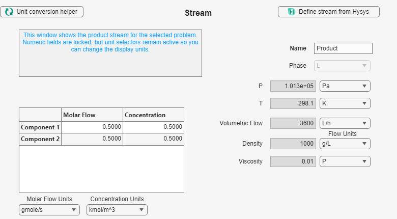

Ideal Reactor App Guide / Worked Example
Isothermal first-order CSTR
Build a two-component teaching case and compare the displayed product with an independent steady-state balance.
Before You Start
Open the Ideal Reactor App and keep the names SimpleSystem, Feed, and CSTR01 consistent throughout the example.
Case Data
This guide uses a small self-contained teaching case. Liquid A reacts irreversibly to B with first-order rate constant k = 0.1 s-1. The feed contains 1 gmol/s of A at 1 kmol/m³ and 298.15 K. Its volumetric flow is 3600 L/h. The isothermal CSTR volume is 0.01 m³ and pressure remains constant.
Enter and Run the Case
- Press Reactive System. On General, create two components and one reaction with coefficients -1 and 1. On Kinetics, enter 0.1 for k0 and 0 for Ea. On Thermodynamics, choose User defined and enter the values shown above. Save it as SimpleSystem.
- Press Stream. Enter the feed values shown in the Stream image and save it as Feed.
- Press Reactor. Choose CSTR, enter 0.01 m³, select Isothermal and Constant, and save it as CSTR01.
- Choose Simulate single reactors. Enter the three saved names exactly as shown in the single-reactor panel and press Run.


Check the Result

Independent check: 3600 L/h is 0.001 m3/s, so the residence time is 10 s. The first-order CSTR relation gives an outlet A concentration of 1000/(1 + 0.1 × 10) = 500 mol/m3. Conversion is therefore 50%, matching the displayed result.
Frequent Errors
- Entering 3600 as cubic metres per hour instead of litres per hour.
- Changing the component order between the system and feed.
- Typing a saved name differently in the single-reactor panel.
Next Steps
Repeat the case with a different volume, then compare a PFR or a series association using the same chemistry and feed.
Credits
ReactorApp was developed by Isabela Fons (University of Alicante).